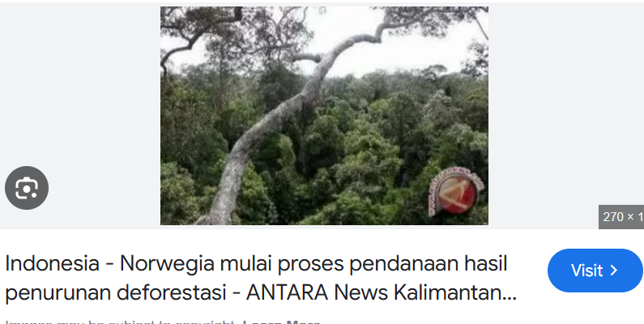
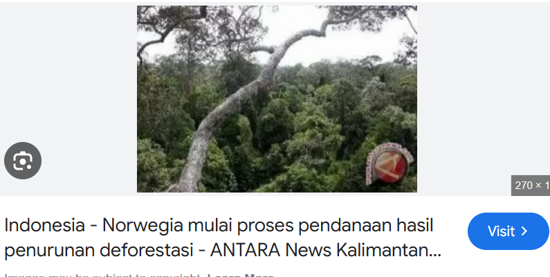

Main Content
Kerja sama antara Indonesia dan Norwegia dalam program Norway-Indonesia REDD+ Partnership adalah contoh nyata bagaimana SDGs dapat diimplementasikan melalui kebijakan internasional yang relevan dan strategis. Program ini berhasil mendukung berbagai tujuan SDGs, termasuk SDG 13, SDG 15, dan SDG 1, dengan fokus pada isu-isu lokal seperti pengurangan deforestasi, mitigasi perubahan iklim, dan pemberdayaan masyarakat. Pendekatan bilateral yang diterapkan memungkinkan hasil yang lebih konkret dibandingkan dengan pendekatan multilateral, karena berfokus pada permasalahan spesifik yang membutuhkan solusi langsung. Kesuksesan program ini juga mencerminkan bahwa SDGs dapat menjadi panduan efektif dalam merancang kebijakan pembangunan yang inklusif dan berkelanjutan.
Namun, untuk memperluas dampaknya, ada beberapa saran yang dapat dilakukan. Pertama, Indonesia perlu memperkuat teknologi pemantauan hutan yang lebih terjangkau agar dapat diakses oleh lebih banyak komunitas, termasuk di daerah terpencil. Langkah ini akan memastikan keberlanjutan program REDD+ dan memberikan manfaat yang lebih luas. Kedua, melibatkan lebih banyak pihak dalam pelaksanaan program, seperti sektor swasta, lembaga non-pemerintah, dan masyarakat lokal, guna menciptakan solusi yang lebih inklusif. Ketiga, diperlukan upaya untuk mereplikasi model kerja sama ini di wilayah lain, baik di dalam maupun di luar Indonesia, agar dampaknya dapat dirasakan secara lebih luas.
Secara keseluruhan, kerja sama ini tidak hanya memberikan manfaat nyata bagi masyarakat lokal, tetapi juga memperkuat posisi Indonesia sebagai pemimpin global dalam isu-isu keberlanjutan. Dengan terus meningkatkan sinergi antara SDGs dan kebijakan internasional, Indonesia dapat menjadi contoh bagi negara lain dalam mencapai pembangunan berkelanjutan yang inklusif dan berdampak positif pada tingkat global.
Sebagai saran, pertama, pemerintah Indonesia perlu memperkuat kapasitas masyarakat lokal melalui pelatihan lanjutan dalam pengelolaan hutan yang berkelanjutan. Dengan pelatihan ini, masyarakat dapat berkontribusi lebih aktif dalam menjaga kelestarian hutan tanpa ketergantungan pada bantuan eksternal. Kedua, perluasan cakupan kerja sama ke wilayah lain di Indonesia dapat dilakukan, terutama daerah dengan tingkat deforestasi tinggi, agar manfaatnya lebih merata. Ketiga, pemerintah juga disarankan untuk mempromosikan keberhasilan program ini di tingkat internasional, baik melalui forum global maupun kolaborasi dengan negara lain yang memiliki tujuan serupa. Dengan demikian, Indonesia dapat memimpin dalam upaya global untuk mitigasi perubahan iklim dan pengelolaan sumber daya alam yang berkelanjutan.
Terakhir, penting untuk melibatkan lebih banyak pihak, seperti sektor swasta dan organisasi non-pemerintah, dalam pelaksanaan program. Sinergi lintas sektor ini akan menciptakan solusi yang lebih inovatif dan berkelanjutan, serta memastikan program ini tetap relevan dan efektif dalam jangka panjang. Dengan langkah-langkah ini, program REDD+ diharapkan tidak hanya menjadi solusi lokal, tetapi juga inspirasi global untuk mencapai tujuan pembangunan yang lebih inklusif dan berkelanjutan.